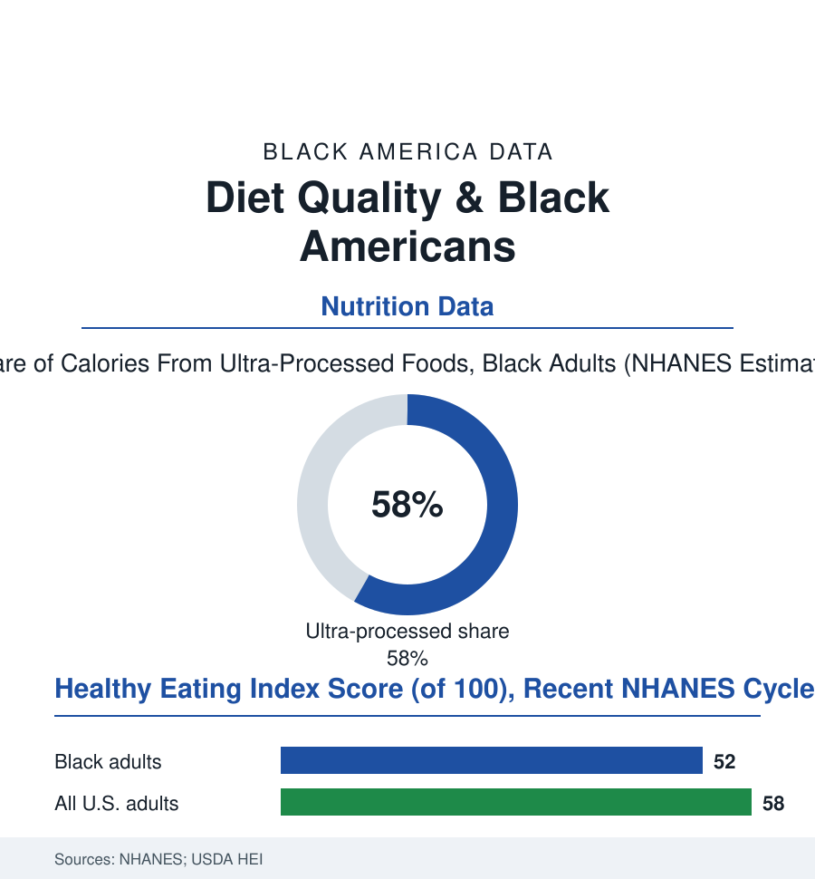

Black Public Health
What's Actually on the Plate: Diet Quality in the Federal Numbers
The government's own diet score gives Black Americans lower marks — while the same data show a food culture whose traditional core outperforms the national diet. The diet quality file.

Every few years the federal government weighs, measures, and — through the NHANES survey's dietary recalls — itemizes what America eats, then grades it against its own Healthy Eating Index. Black Americans' diets score below the national average on that index, draw a majority of their calories from ultra-processed foods, and carry sodium loads the cardiology file would predict. Inside those numbers, though, sits a second story the same data tell. This article reads the diet quality file.
The Score and Its Construction
The index's gap is real and its anatomy matters more than its size: the component scores show the shortfalls concentrated in the categories the food environment supplies worst in the neighborhoods of the food-access file (the whole-grain and dairy components — the lactose file's physiology taxing the dairy score by design, a grading artifact the nutrition literature itself flags: the index rewards a food group a large share of this population cannot comfortably eat, its substitutes only lately legible to the scoring), the seafood and greens-and-beans rows, and the sodium and added-sugar ceilings blown through at rates the whole country shares (the American diet's overall score in the high fifties of a hundred — a national mediocrity within which the racial gap is a second-order story the headlines routinely invert). And then the same NHANES tables record the tradition's quiet victories: Black diets' fiber from the legume and greens traditions, the home-cooking rates (the time-use and expenditure data showing Black households cooking at home at rates the fast-food stereotype inverts — the scratch tradition's persistence in the survey data), the sweet-tea and soda declines of the recent cycles (Black children's sugar-sweetened beverage consumption falling from its peak in the CDC series, the community campaigns of the health file among the credited causes). The diet, in the data, is not a culture problem; it is a supply problem with a strong culture surviving inside it — the collard and the bean scoring like the superfoods they nutritionally are, in a retail environment that prices the fresh version as a specialty item in the neighborhoods that invented it.
The Interventions That Respect the Plate
The nutrition-intervention literature's racial chapter is a record of designs learning humility: the landmark trials (DASH — the dietary pattern whose blood-pressure effects were largest, in the trial data, in its Black participants, the eating plan built partly on the Southern table's own vegetables and legumes; the sodium-reduction studies' outsized effects in the salt-sensitivity rows of the hypertension file) succeeding precisely where they worked with the cuisine rather than against it, the failures catalogued with equal care (the programs that arrived with another culture's menu and a lecture, their adherence curves in the evaluations describing the reception). The market has followed the evidence in the recent data: the soul-food vegan and the lighter-tradition restaurant rows of the food-business file, the church-health ministries' cooking ministries (the faith file's nutrition programs posting the participation numbers the clinics envy, their potlucks functioning as the intervention's delivery system), the medically-tailored-meal and produce-prescription programs of the food-is-medicine file (their cardiometabolic outcomes in the recent trials among the strongest in the nutrition literature, their enrollment the health system's formal admission that the plate is a pharmacy). The file's policy arithmetic is the food-access data restated in clinical units: every point of the index gap maps to the retail, price, and time variables of the environment files — which is why the interventions that move the score are the ones that change the environment or honor the culture, and the ones that merely instruct the eater have a half-century of null results in the journals.
Reading the Diet Data
The federal grade for the Black American diet is a C-minus written by a rubric that docks the dairy a body can't use and never met the neighborhood's produce prices. The fuller data tell the truer story: a great food culture, provisioning itself heroically inside a supply system built against it, improving on the trend lines where the system lets it. NHANES publishes the recalls. The grandmothers, measuring almost nothing and knowing the sodium by heart, could annotate every single survey cycle.
More in Black Public Health
Hypertension Among Black Adults: Prevalence, Control, and Consequences
About 55 percent of Black adults have hypertension — the highest rate of any U.S. group. Prevalence, onset, control, and the stroke, heart, and kidney consequences in the data.
Diabetes Among Black Adults: Prevalence and Complications
Nearly one in five Black adults has diabetes, diagnosed or undiagnosed — and its complications fall with particular weight. The CDC data on prevalence, control, and outcomes.
Black Life Expectancy: The Gap at Birth and Its Causes
Black life expectancy at birth is about 73 years, roughly five years below the national figure — the summary measure of every health gap in this section. The CDC data.
Source: National Health and Nutrition Examination Survey (NHANES); USDA Healthy Eating Index; American Journal of Clinical Nutrition diet studies; CDC nutrition data.